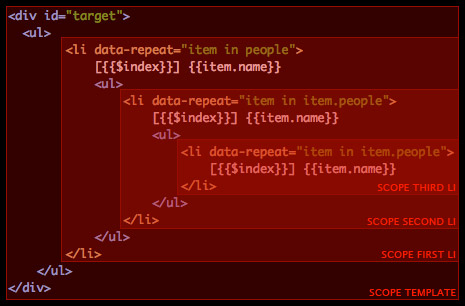

Seamless DOM-based templates.
A web template engine is a solution that is used to process web templates and content to produce an HTML output.
While this is true for the most common web template engine, soma-template differs about the output process. soma-template will also produce an HTML output, but more precisely, will manipulate DOM nodes rather than producing a string that will be injected in the DOM.
This results in a workflow that stays close to a normal HTML development as the template can be directly part of the DOM itself.
soma-template is a lightweight library (4.7 KB). It is tested and works in all modern browsers and in Internet Explorer from version 7. Its performance will be directly related to the DOM manipulation performance of the browser itself. This is why today the library is very fast on Google Chrome, which I recommend.
The library probably wouldn't have been created without the fully featured framework developed by Google: AngularJS. While the code itself has nothing to do with AngularJS, the concept has been greatly inspired by its template system and some similarities can be found. The library has been kept to a minimum to do a single job: update the DOM with content.
The primary goal is to use the native DOM API, with a minimal destruction of the nodes. I also believe, as other developers, that DOM-based template engines are the future and will probably be one day be implemented in the browser itself. Google is probably working on that already as stated in this excellent post by Steven Sanderson.
So, a big thanks to the AngularJS team for a great inspiration, at least to me.
You can also download a zip file containing everything. Finally, add the script to your page:
<script type="text/javascript" src="soma-template.js"></script>
$ npm install soma-template
var template = require("soma-template");
A template is a DOM element that contains tokens, and these tokens will be replaced by data provided to the template. Here is an example:
<div id="template"> <p>My name is {{name}}.</p> </div>
A token is an identifier surrounded by double curly braces (customizable). In this example "name" is the identifier and the template engine will try to find data to replace the token in the DOM element.
There are three ways to create a template.
This is the easiest way, and the one I recommend. The template is part of the DOM and a reference to it can be sent to the create function. A template instance will be returned, this is what will be used to render data inside it.
Note that the tokens will appear in the DOM but the template engine provide a way to easily hide elements (such as the template itself) until the template is rendered. See the class name "data-cloak".
<div id="target"><p>My name is {{name}}.</p></div> <script type="text/javascript"> var target = document.getElementById("target"); var template = soma.template.create(target); </script>
Instead of using an element directly, you can also send a string that represents the template. The template engine will inject the string as a real element inside the DOM, this is why you also need to specify an element target when you use a string template.
Note that even if you create a template using a string, rendering data inside the template will be done in the same manner: using native DOM manipulation. More specifically, the DOM property innerHTML is never used to render a template in soma-template.
<div id="target"></div> <script type="text/javascript"> var templateString = '<p>My name is {{name}}.</p>'; var target = document.getElementById("target"); var template = soma.template.create(templateString, target); </script>
This method is similar to other template engines. Elements can be surrounded by script tags and to be injected in the DOM. There is no major advantage using this method as the template will inject it in the DOM as soon as you create the template instance. However this makes you able to compile it at a chosen moment and before that, it will never appear in the DOM.
<div id="target"></div> <script id="source" type="text/x-soma-template"> <p>{{name}}</p> </script> <script type="text/javascript"> var source = document.getElementById("source"); var target = document.getElementById("target"); var template = soma.template.create(source, target); </script>
Rendering a template is the action of sending data inside the template so it can find information to replace the tokens.
This part will be much different than other template engines. The JSON format can of course still be used, but the way that it is sent to the template is different.
The template instance is providing a property called scope. There is at least one scope per template, which is nothing more than an object with some special properties for the template engine.
There can be more than one scope in some cases, see the special attribute data-repeat. The scope is the object that will be used to provide the data. In other words, the data is not sent to the template but assigned to the scope in a very easy and natural manner.
Here is an example where a value is provided for an identifier named "name" (to keep the code short and simple, a template variable is used to refer to a template instance, see previous examples).
<div id="target"><p>My name is {{name}} and my age is {{age}}.</p></div> <script type="text/javascript"> template.scope.name = "John"; template.scope.age = 21; template.render(); </script>
This will result in the following:
<div id="target"><p>My name is John and my age is 21.</p></div>
Another example with data received from an API call. The response can simply be assigned to a scope property and accessed using a dot notation.
<div id="target"> <p>{{tweets.results.length}} tweets retrieved in {{tweets.completed_in}} seconds.</p> </div> <script> $.ajax({ type:'GET', url: 'http://search.twitter.com/search.json?q=template', dataType:'jsonp', success:function (data) { template.scope.tweets = data; template.render(); } }); </script>
A String interpolation makes an heavy use of string representation of data. It means insert a string or replace a variable with its value making string formatting very intuitive.
You can add tokens in text nodes, but you can also use them in attribute names and values. In the following example, a class value is rendered, as well as the attribute name:
<div id="target"> <p {{name}}="{{value}}">The class used is: {{value}}</p> </div> <script> template.scope.name = "class"; template.scope.value = "color"; template.render(); </script>
You can use tokens in anything, but also anywhere, even in the middle of other strings.
<div id="target"> <p cla{{name}}="{{value}}lor"> Ren{{text1}}er any{{text2}}ng an{{text3}}re </p> </div> <script> template.scope.name = "ss"; template.scope.value = "co"; template.scope.text1 = "d"; template.scope.text2 = "thi"; template.scope.text3 = "ywhe"; template.render(); </script>
A path, or dot notation, can be used in the token to access to specific data:
<div id="target"> <p>My name is {{section.person.name}} and my age is {{section.person.age}}.</p> </div> <script> template.scope.section = { person: { name: "John", age: 21 } }; template.render(); </script>
Function can also be called from the token, the value returned by the function will replace the token:
<div id="target"><p>My name is {{getName()}}.</p></div> <script> template.scope.getName = function() { return "John"; }; template.render(); </script>
Parameters can be sent with a function call. They can be of two types: a string or a reference to another property in the scope:
<div id="target"><p>I am {{getAge("21", years)}}.</p></div> <script> template.scope.years = "years old", template.scope.getAge = function(age, type) { return age + " " + type; }; template.render(); </script>
Paths, strings, functions, parameters, text node, attribute names and values, everything can be mixed altogether:
<div id="target"> <p class="bold {{styles.color}}"> I am {{utils.makeOlder(person.age, "years old")}}. </p> </div> <script> template.scope.styles = { color: "color" }; template.scope.person = { age: 21 }; template.scope.utils = { makeOlder: function(age, type) { return (age*2) + " " + type; } }; template.render(); </script>
A repeater is a special attribute (data-repeat) that will duplicate the current node. A repeater can be used to perform an iteration on an array or an object to display its content.
The repeater attribute value is composed of three parts: a "current variable" that you can name as your convenience, the keyword "in" and the array or object target: "my_var in my_array".
A scope will be created for each repeated node to avoid data conflict, and will have a reference to its parent. The template engine will automatically search in its scope parent in case it doesn't find data in its current scope.
Here is an example of an array repeater, an $index variable is also available on the current scope and can be passed to a function if needed.
The node that contains the data-repeat, and everything inside, will be duplicated three times in this example. One for each item in the array items.
<div id="target"> <div data-repeat="item in items"> <div>[{{$index}}] {{greet}} {{item.name}}!</div> </div> </div> <script> template.scope.greet = "Hello"; template.scope.items = [ { "name": "John" }, { "name": "David" }, { "name": "Mike" } ]; template.render(); </script>
You can also perform an iteration on an object, in this case a $key variable will be available on the current scope.
<div id="target"> <div data-repeat="item in items"> <div>[{{$key}}] {{greet}} {{item}}!</div> </div> </div> <script> template.scope.greet = "Hello"; template.scope.items = { name1: "John", name2: "David", name3: "Mike" }; template.render(); </script>
A scope provides a data model context for a template, and a new scope child is created for each item of a repeater to provide a new context and avoid data conflict.
The following image illustrates a template scope that contains a child scope, which contains also another child scope, and so on. Notice that all variables names are identical but the values are probably different.

Note that a scope parent can also be accessed using a parent path notation (also works with parameters):
{{../item.name}} {{../../getName(../$index)}}
To provide flexibility, a specific rendering can be intercepted so you can alter it. They are called watchers, and you can watch either a token or an element.
The following example adds a watcher to the date token. The full string date received as a parameter will be formatted to display only the day, the month and the year.
<div id="target">Date formatted: {{date}}</div> <script> template.scope.date = "Wed Nov 14 2012 02:31:20 GMT+0000 (GMT)"; template.watch('date', function(oldValue, newValue) { return newValue.match(/\w{3} \d{2} \d{4}/)[0]; }); template.render(); </script>
The following example is watching an element, which is a div. For convenience, the template engine will not only watch the token {{color}} in the div but will also watch any token that is a text node and a direct child of this div, the token {{content}} in this example.
<div id="target"><div class="{{color}}">{{content}}</div></div> <script> template.scope.color = "color-red"; template.scope.content = "This text is not red"; template.watch(template.element.firstChild, function(oldValue, newValue, pattern, scope, node, attribute) { if (attribute) return "color-blue"; else return newValue + " and has been watched as well!"; }); template.render(); </script>